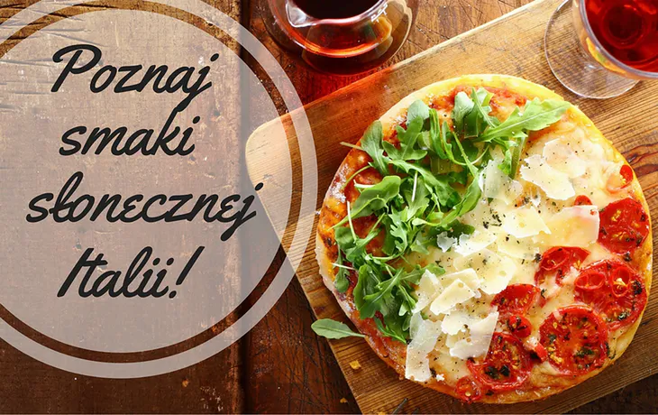
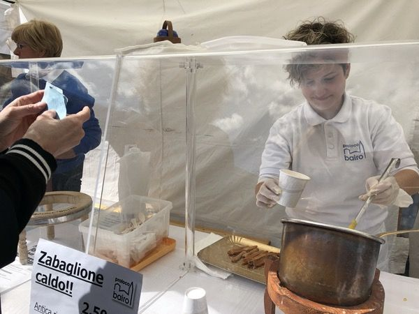
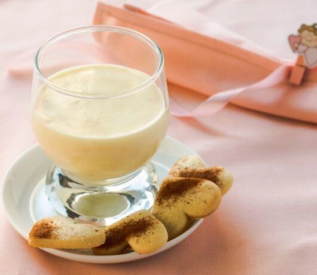
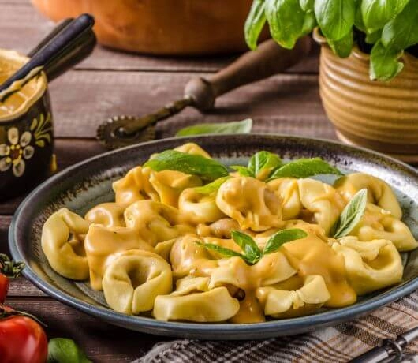
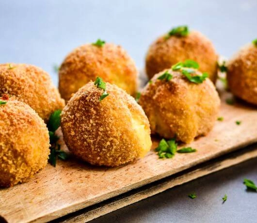

Włochy
Wiadomym jest, że Włosi żyć nie mogą bez dobrej kuchni. Gotują, próbują, smakują, zmieniają składniki, udoskonalają każdy przepis. Ciężko znaleźć osobę, która nie podzielałaby tej pasji. Włosi oprócz gotowania bardzo często także rozmawiają o jedzeniu. Przyjaciele lub koledzy w pracy , którzy pochodzą z różnych regionów, wymieniają między sobą informacje na temat kuchni regionalnych i charakterystycznych dla niej smakołyków. Tak zaczynają się “słowne” podróże kulinarne.

Tak się składa, że każde miejsce we Włoszech posiada jakąś swoją słynną specjalność kulinarną. Niektóre smakołyki znane są na całym świecie, żeby wspomnieć o najbardziej słynnej potrawie z Włoch o pizzy. Mówiąc pizza, mamy na myśli Neapol, choć dobre pizze robi się w całych Włoszech. Jednakże smakosze wyruszają w podróż kulinarną właśnie do Neapolu, by spróbować oryginalnego smaku pizzy w atmosferze miejsca, gdzie powstała.
Najlepsze tortellini to oczywiście Bolonia, makaron carbonara mówią, że najlepiej je się w Rzymie, wielu wznosiło toast czerwonym winem z Toskanii o nazwie Chianti, żeby nie wspomnieć o szynce parmeńskiej, serze parmigiano, grissini z Turynu, occie balsamicznym z Modeny… choć lista jest bardzo bardzo długa.
Wiele jest różnych innych włoskich potraw, które znane są tylko w danym regionie, a które przez swój smak i oryginalność warte są rozpowszechnienia w całym kraju. We Włoszech zajmują się tym stowarzyszenia, działające na określonym terytorium i których celem jest promowanie i rozpowszechnianie tradycji, kultury i historii danego miejsca tzw. Proloco. Należą do nich często mieszkańcy, którzy jako wolontariusze poświęcają swój czas i energię na promowanie ich rodzinnych okolic.

To właśnie na takich imprezach można posmakować świeżo zrobione zabajone, albo napić się gorącego wina grzanego gdy dzień chłodny, bądź zjeść świeżutkie arancino.
Piemont

To chyba najsłodszy region Włoch. Po pierwsze słynie z kremu czekoladowego, którym nagminnie opychają się dzieci. Włosi pozazdrościli Amerykanom masła orzechowego i w niewielkiej fabryce czekolady w miasteczku Alba stworzyli krem z kakao i orzechów laskowych nazwany nutellą, od amerykańskiego –nut (orzech) i śpiewnej włoskiej końcówki –ella. Ale nie dość na tym. Piemont znany jest też z kremu zabaione, który przypomina trochę nasz kogel-mogel. Robi się go z żółtek, słodkiego wina i kasztanów jadalnych.
Emilia-Romagna

Speghetti alla bolognese znają wszyscy. Prócz bolończyków. Bo mięsno-pomidorowy sos, podlewany czerwonym winem, tak naprawdę znany jest w Bolonii pod nazwą ragù. I wcale nie jest podawny z makaronem spaghetti, ale z tagliatelle. Tak gwoli sprostowaniu. Ale bohaterką regionu nie są wcale pasty, lecz piadina – płaski placek składany na pół z rukolą i prosciutto w środku. Na drugim miejscu plasują się bolońskie tortellini, czyli pierożki przypominające nasze uszka oraz kiełbasa mortadela robiona z wieprzowiny. W Polsce mortadela cieszy się złą sławą ciągnącą się jeszcze z czasów PRL-u, kiedy była najgorszej jakości. Do dziś zresztą jest tak postrzegana. Ale we Włoszch to królowa wędlin, robiona z najlepszego mięsa. Jej przepis pochodzi z XIV w.
Sycylia

Dużo potraw sycylijskich przewieźli Arabowie. Przede wszytkim słodkości: cannoli - chrupiące rurki z kreme na bazie sera ricotta, sfinci – pączki, buccellati – bożonarodzeniowe ciastka z figami, orzechami, pistacjami i tartą czekoladą, mustazzoli – rurki wypęłnione marmoladą z fig, cucciddati – biszkopty w kształcie słońca oraz królowa sycylijskich ciast cassata sicilina – z kandyzowami owocami, kremem z ricotty i waniliowej pianki.
Z pikantnych potraw koniecznie spróbujcie ryżowych kulek z nadzieniem grzybowym, z groszkiem, mięsem lub z mozzarellą, które nazywają się arancini. A także lodową granitę, którą mylnie utożsamiana jest z sorbetem. O ile ten ostatni jest jednorodny, to granita ma postać mocno rozdrodnionych bryłek – najczęściej podaje się ją na śniadanie z chlebem.
 Włochy
Włochy Niemcy
Niemcy Hiszpania
Hiszpania